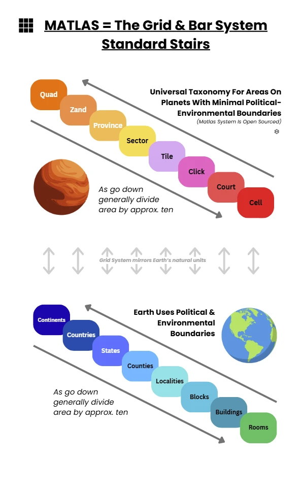
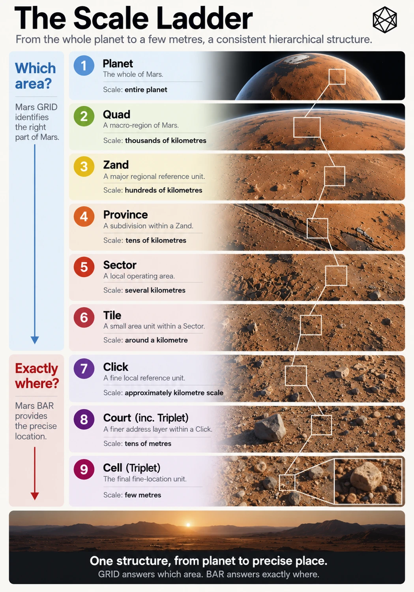
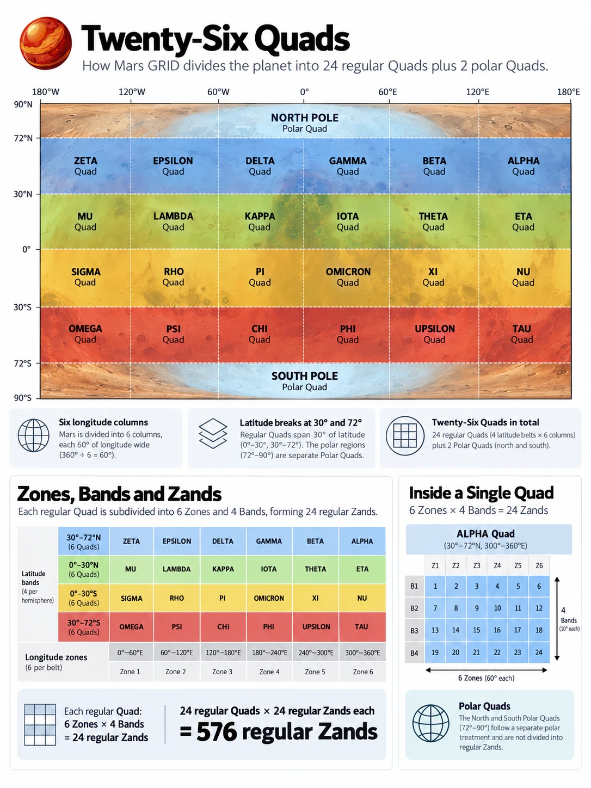
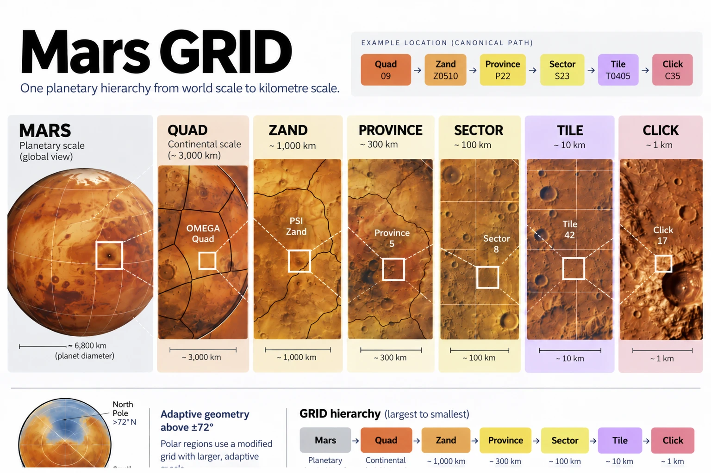
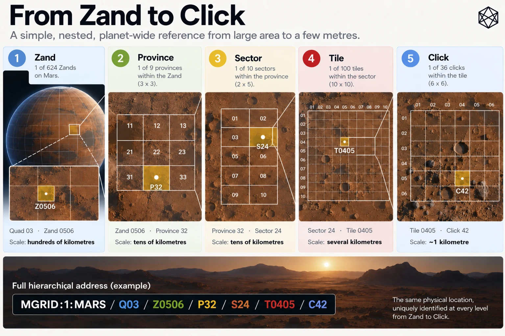

E - MGRID:1:MARS — Technical Reference
Hierarchy, Global Counts, Canonical Identifiers and Boundary Rules
Mars GRID is the persistent geographic reference structure at the centre of Matlas. It divides the entire surface of Mars into nested areas, from planetary-scale Quads to kilometre-scale Clicks, using a defined coordinate reference and deterministic subdivision rules.
The version-one geography is identified as MGRID:1. It provides one structural hierarchy across the whole planet, including the polar caps, without requiring a central authority to allocate individual geographic identifiers.
This appendix records the architecture in reference form: its levels, dimensions, global counts, identifiers, coordinate conventions, boundary ownership and persistence rules. It is intended to make the system understandable and its principal properties inspectable without requiring the reader to work through the original design arguments.
The complete reproducible algorithms, machine-readable tables and conformance material belong to the separately maintained Matlas Protocol.
E.1 — The Canonical GRID Hierarchy

GRID contains six nested geographic levels beneath Mars itself:
Mars → Quad → Zand → Province → Sector → Tile → Click
Each level serves a different scale of spatial reference. A Quad provides broad planetary orientation, while a Click identifies a small area of ground roughly a kilometre across. The intermediate levels connect those two scales through a continuous system of containment.
A complete GRID identifier therefore describes one location through its ancestry. Every Click belongs to one Tile; every Tile belongs to one Sector; every Sector belongs to one Province; every Province belongs to one Zand; and every Zand belongs to one Quad.
E.1.1 — Hierarchy reference table
Level | Principal role | Regular angular dimensions |
|---|---|---|
Mars | Entire planetary surface | Whole planet |
Quad | Broad planetary orientation | 60° longitude; 30° or 42° latitude |
Zand | Major regional reference | 15° longitude × 6° latitude |
Province | Broad operating region | 5° longitude × 2° latitude |
Sector | Regional and local operations | 1° longitude × 1° latitude |
Tile | Settlement-scale and local geography | 0.1° longitude × 0.1° latitude |
Click | Kilometre-scale civil reference | 1′ longitude × 1′ latitude |
These dimensions apply to Regular GRID, extending from the equator to but not including 72° latitude in each hemisphere.
Polar GRID retains exactly the same named hierarchy but adapts longitudinal subdivisions. The polar Quads and Zands also have different latitude extents from their regular equivalents.
Angular dimensions are the defining geometry. Physical dimensions in kilometres vary with latitude and, in more detailed representations, with the planetary reference model and terrain.

E.1.2 — The hierarchy is geographic, not administrative
The names Quad, Zand, Province, Sector, Tile and Click are structural terms. Their meanings arise from the GRID hierarchy, not from any government, legal authority or settlement institution.
In particular, a GRID Province is not a political province. A Sector is not necessarily an operating territory. A Click is not a property parcel, and its boundary does not automatically determine ownership, jurisdiction or access rights.
The hierarchy supplies a shared answer to which piece of Mars is being described. Future political, legal, scientific and cultural geographies remain separate and may cross its boundaries.
E.2 — The Planetary Framework

GRID's upper structure begins with the equator, the latitude boundaries at 30° and 72° north and south, and six regular longitude columns of 60° each.
The regular planet is organised into four broad latitude Belts. Two additional polar regions complete the global coverage.
E.2.1 — Latitude regimes
Region | Latitude extent | GRID designation |
|---|---|---|
North Polar | 72°N–90°N | North Polar Quad |
Northern Mid | 30°N–72°N | Blue Belt |
Northern Low | 0°–30°N | Green Belt |
Southern Low | 0°–30°S | Gold Belt |
Southern Mid | 30°S–72°S | Red Belt |
South Polar | 72°S–90°S | South Polar Quad |
The four regular Belts provide geographic orientation without becoming additional mandatory levels in the GRID identifier.
The equator belongs to the northern low-latitude regime. Exact 30° boundaries belong to the corresponding mid-latitude regime. Exact 72° boundaries belong to Polar GRID. These conventions are part of Boundary Ownership Rule B1, described in Section E.6.
E.2.2 — Quads
Each regular Belt is divided into six 60° eastward longitude columns, producing 24 regular Quads.
One additional Quad covers each complete polar cap.
Quad group | Geographic coverage | Number of Quads |
|---|---|---|
Q01 | North Polar | 1 |
Q02–Q07 | Blue Belt | 6 |
Q08–Q13 | Green Belt | 6 |
Q14–Q19 | Gold Belt | 6 |
Q20–Q25 | Red Belt | 6 |
Q26 | South Polar | 1 |
Total | Entire Mars surface | 26 |
The regular columns begin at 0°, 60°, 120°, 180°, 240° and 300° east longitude. Each spans 60°, with longitude wrapping to 0° after 360°.
Q01 and Q26 are complete polar caps rather than subdivisions of the six regular longitude columns.
The full Quad-by-Quad geographic reference is provided in Appendix C.
E.2.3 — Zones and Bands
Beneath the broad Quad structure, Regular GRID uses two systematic angular divisions:
- Zones: 24 longitude divisions, each 15° wide.
- Bands: 24 regular latitude divisions, each 6° high.
Zones are numbered 01–24, proceeding eastward from 0° longitude. Bands are numbered 01–24 from the northern polar side of Regular GRID towards the southern polar side.
The numbering is intentionally different in the two dimensions. Zones follow longitude eastward; Bands provide one continuous north-to-south reference sequence.
Band range | Geographic coverage | Associated Belt |
|---|---|---|
01–07 | 72°N to 30°N | Blue |
08–12 | 30°N to 0° | Green |
13–17 | 0° to 30°S | Gold |
18–24 | 30°S to 72°S | Red |
The detailed Zone and Band reference tables appear in Appendix B.
E.2.4 — Zands
A Zand is the intersection of a Zone and a Band. The name is derived from Zone–Band, and each regular Zand therefore represents one 15° × 6° angular region.
The regular planet contains:
24 Zones × 24 Bands = 576 regular Zands
Each polar Quad has 24 wedge-shaped Zands corresponding to the same 15° longitude positions. Polar Zands extend from 72° latitude to the relevant pole and use a polar suffix rather than a regular Band number.
The two polar caps add:
24 × 2 = 48 polar Zands
The global total is therefore:
624 Zands
At Zand level, the entire planet has entered the same geographic hierarchy. The difference between regular and polar geometry appears in how those Zands are subdivided further.
E.3 — Regular GRID Subdivision
Within Regular GRID, the hierarchy descends through four fixed subdivision steps.

E.3.1 — Branching table
Parent | Subdivision | Children per parent | Child dimensions |
|---|---|---|---|
Zand → Province | 3 latitude rows × 3 longitude columns | 9 | 2° × 5° |
Province → Sector | 2 latitude rows × 5 longitude columns | 10 | 1° × 1° |
Sector → Tile | 10 latitude rows × 10 longitude columns | 100 | 0.1° × 0.1° |
Tile → Click | 6 latitude rows × 6 longitude columns | 36 | 1′ × 1′ |
The dimensions in the final column are stated latitude first, longitude second.
The subdivision ratios differ because the intended operating scales differ. Their common property is not identical branching, but exact containment: every child occupies a defined portion of its parent and belongs to no other parent.
E.3.2 — Units within one regular Zand

Level | Units within one regular Zand |
|---|---|
Zand | 1 |
Provinces | 9 |
Sectors | 90 |
Tiles | 9,000 |
Clicks | 324,000 |
The final count follows directly from the branching:
9 × 10 × 100 × 36 = 324,000 Clicks per regular Zand
This count is constant throughout Regular GRID, even though the physical size and area of equivalent units vary with latitude.
E.3.3 — Row and column conventions
GRID uses local row and column indices beneath each parent.
Rows increase from the equatorward edge towards the poleward edge. Columns increase eastward from the western boundary.
The indexing is one-based within GRID identifiers, meaning the first row or column is numbered 1 rather than 0.
For example, Province P32 means the third latitude row and second longitude column inside its Zand. Sector S24 means the second row and fourth column inside its Province.
This orientation applies in both hemispheres. In the southern hemisphere, proceeding poleward means moving towards increasingly negative latitude, so implementations must apply the defined latitude ownership rule rather than assuming ordinary signed-latitude arithmetic has the same ordering everywhere.
E.3.4 — Physical scale
The angular definition determines each area's boundaries. Physical dimensions are consequences of the geometry, not additional definitions.
Near the equator, one arcminute of latitude or longitude spans approximately a kilometre. At higher latitudes, the physical width represented by longitude becomes smaller, while the north–south dimension remains broadly comparable.
GRID does not therefore produce equal-area units. Its regular subdivision trades perfect physical uniformity for straightforward angular geometry, direct coordinate relationships and relatively simple reconstruction.
At Click level, the system has reached its intended finest civil-area scale. BAR continues below Click, but that fine-addressing layer is distinct from the GRID hierarchy.
E.4 — Polar GRID and Global Counts
Regular subdivision cannot continue unchanged towards the poles without producing increasingly narrow longitudinal units.
At 72° north and south, GRID therefore enters the adaptive Polar Rule P1 regime.
The full P1 geometry and branching method are documented in Appendix F. For this reference, the important properties are that the hierarchy remains unchanged, latitude subdivision sizes remain fixed below Zand, and east–west branching is selected to improve physical proportions while preserving containment.
E.4.1 — Polar subdivision reference
Each polar Quad contains 24 Zands, each spanning 15° of longitude and the 18° of latitude between 72° and 90°.
Within a polar Zand:
- Provinces retain 2° latitude height, with up to 3 longitude children per row.
- Sectors retain 1° latitude height, with up to 5 longitude children per row.
- Tiles retain 0.1° latitude height, with up to 10 longitude children per row.
- Clicks retain 1 arcminute latitude height, with up to 6 longitude children per row.
The number of longitude children is not necessarily the same in every row. It is derived from the current parent geometry and the P1 aspect-ratio rule.
As a simple Province-level example, the four 2° rows between 72° and 80° use two longitude children each, while the five rows between 80° and 90° use one each. This produces thirteen Provinces per polar Zand.
E.4.2 — Regular and polar counts
Level | Regular GRID | Polar GRID | Global total |
|---|---|---|---|
Quad | 24 | 2 | 26 |
Zand | 576 | 48 | 624 |
Province | 5,184 | 624 | 5,808 |
Sector | 51,840 | 2,208 | 54,048 |
Tile | 5,184,000 | 192,816 | 5,376,816 |
Click | 186,624,000 | 6,933,552 | 193,557,552 |
These totals combine the fixed regular subdivision with the complete deterministic P1 polar topology.
E.4.3 — Units within one polar Zand
Level | Units per polar Zand |
|---|---|
Zand | 1 |
Provinces | 13 |
Sectors | 46 |
Tiles | 4,017 |
Clicks | 144,449 |
Each polar Quad contains 24 identical-count Zand hierarchies, rotated through the global Zone positions.
The two polar Quads together therefore contain 48 polar Zands. Their subdivision produces the polar contributions shown in the preceding global count table.
E.4.4 — Counts by Quad group
The following table reconciles the complete planetary structure at the highest geographic level.
Quad group | Zands | Provinces | Sectors | Tiles | Clicks |
|---|---|---|---|---|---|
Q01 — North Polar | 24 | 312 | 1,104 | 96,408 | 3,466,776 |
Q02–Q07 — Blue | 168 | 1,512 | 15,120 | 1,512,000 | 54,432,000 |
Q08–Q13 — Green | 120 | 1,080 | 10,800 | 1,080,000 | 38,880,000 |
Q14–Q19 — Gold | 120 | 1,080 | 10,800 | 1,080,000 | 38,880,000 |
Q20–Q25 — Red | 168 | 1,512 | 15,120 | 1,512,000 | 54,432,000 |
Q26 — South Polar | 24 | 312 | 1,104 | 96,408 | 3,466,776 |
Total | 624 | 5,808 | 54,048 | 5,376,816 | 193,557,552 |
The differing numbers of units are intentional. Low-latitude regular Quads contain twenty Zands each; mid-latitude regular Quads contain twenty-eight; and polar Quads contain twenty-four.
The system preserves consistent structural meaning without demanding equal child counts at every geographic level.
E.5 — Canonical GRID Identifiers
MGRID:1 uses an uppercase, ASCII, slash-separated identifier that records each unit's geographic ancestry.
The prefix identifies the system, major geometry version and planetary body:
MGRID:1
The remaining segments identify the nested geographic unit.
E.5.1 — Canonical grammar
The complete regular Click format is:
MGRID:1:MARS/Qdd/Zzzbb/Prc/Src/Trrcc/Crc
The polar formats are:
MGRID:1:MARS/Q01/ZzzN/Prc/Src/Trrcc/Crc
MGRID:1:MARS/Q26/ZzzS/Prc/Src/Trrcc/Crc
The letters d, z, b, r and c in these patterns represent numeric fields; they are not literal identifier characters.
E.5.2 — Identifier segment reference
Segment | Meaning | Canonical form |
|---|---|---|
MGRID:1:MARS | System, major version and planet | Fixed uppercase prefix |
Qdd | Quad number | Q01–Q26 |
Zzzbb | Regular Zand | Two-digit Zone + two-digit Band |
ZzzN | North polar Zand | Two-digit Zone + N |
ZzzS | South polar Zand | Two-digit Zone + S |
Prc | Province | One-based local row and column |
Src | Sector | One-based local row and column |
Trrcc | Tile | Two-digit row and column, each 01–10 |
Crc | Click | Row and column, each 1–6 |
A regular Province has rows and columns 1–3. In Polar GRID, Province rows can extend to 9, and valid column positions depend on P1 branching.
Sector rows are 1–2, while valid polar Sector columns depend on the actual containing Province and the selected P1 branch count.
A path is valid only when every segment is an actual child of the preceding segment. A syntactically correct identifier is not sufficient if its Quad, Zone, Band or local child indices are geographically inconsistent.
E.5.3 — Complete and partial references
A full GRID reference reaches Click:
MGRID:1:MARS/Q03/Z0506/P32/S24/T0405/C42
The same hierarchy can be referenced at broader scales by stopping earlier:
Level | Reference |
|---|---|
Mars | MGRID:1:MARS |
Quad | MGRID:1:MARS/Q03 |
Zand | MGRID:1:MARS/Q03/Z0506 |
Province | MGRID:1:MARS/Q03/Z0506/P32 |
Sector | MGRID:1:MARS/Q03/Z0506/P32/S24 |
Tile | MGRID:1:MARS/Q03/Z0506/P32/S24/T0405 |
Click | MGRID:1:MARS/Q03/Z0506/P32/S24/T0405/C42 |
This makes the identifier useful at several operating scales. A region-level system can retain a Province reference without carrying the finer path, while software requiring local geography can resolve the full Click.
The same rule applies to polar references, using the appropriate polar Zand syntax and P1-compatible descendants.
E.5.4 — Names and aliases
GRID identifiers are numeric and structural. Belt names, optional Quad names and other mnemonic labels are descriptive aids rather than replacements for the canonical reference.
An application may display a human-friendly geographic name alongside the identifier, but the identifier's meaning does not depend on a particular language or naming convention.
Future local place names likewise remain separate. A Martian settlement may lie within several Clicks and use its own name and addresses without becoming a new GRID level.
E.6 — Coordinate Reference and Boundary Ownership
MGRID:1 is defined against MGrid Mars Reference Realisation 1, abbreviated MRR-1.
MRR-1 is the frozen civil reference used to define GRID's spatial meaning. It is based on a selected Mars orientation and longitude framework rather than a continually updated scientific reference.
E.6.1 — Coordinate conventions
Property | MGRID:1 convention |
|---|---|
Planet | Mars |
Latitude | Planetocentric |
Longitude | East-positive |
Latitude range | −90° to +90°, inclusive |
Canonical longitude | 0° inclusive to 360° exclusive |
Longitude wrap | 360° = 0° |
Frozen civil reference | MRR-1 |
Vertical coordinate | Not part of the two-dimensional GRID identity |
Longitude may be supplied in an equivalent angular representation and then normalised. For example, −15° and 345° represent the same east-positive direction after normalisation.
Planetographic latitude, west-positive longitude and coordinates expressed against another scientific realization cannot simply be relabelled as MRR-1 coordinates. They require an appropriate, explicitly defined conversion.
The hierarchy represents two-dimensional surface-reference areas. It does not establish height, depth, terrain clearance or a guaranteed route between locations.
E.6.2 — B1: Boundary Ownership Rule
GRID must assign every valid surface position to exactly one hierarchy path. Exact boundary positions therefore require unambiguous ownership.
Longitude: Intervals include the western edge and exclude the eastern edge.
[west, east)
A point exactly on an internal longitude boundary belongs to the unit immediately eastward.
Latitude: Within each hemisphere, intervals include the equatorward edge and exclude the poleward edge. An exact internal latitude boundary belongs to the more poleward unit.
The equator, the ±72° transition and the geographic poles have explicit additional conventions.
E.6.3 — Boundary reference cases
Exact position or condition | Ownership result |
|---|---|
0° latitude | Northern hemisphere, Green Belt |
+30° latitude | Blue Belt |
−30° latitude | Red Belt |
+72° latitude | North Polar Quad Q01 |
−72° latitude | South Polar Quad Q26 |
15°E longitude | Zone 02 |
60°E longitude | Zone 05; next 60° Quad column |
360°E longitude | Normalised to 0°; Zone 01 |
−15° longitude | Normalised to 345°E; Zone 24 |
Exact internal Click longitude edge | Immediately eastward Click |
Exact internal Click latitude edge | Immediately poleward Click |
Exact +90° latitude | Single North Pole apex lineage |
Exact −90° latitude | Single South Pole apex lineage |
The southern latitude rule is applied using distance from the equator, rather than by assuming that ordinary increasing signed latitude always means poleward movement.
E.6.4 — The exact poles
At 90° north or south, longitude no longer distinguishes physical directions around the same point. Every meridian meets at the apex.
MGRID therefore ignores supplied valid longitude for indexing at the exact poles and canonicalises it to 0°.
The two canonical apex Click identifiers are:
North Pole
MGRID:1:MARS/Q01/Z01N/P91/S21/T1001/C61
South Pole
MGRID:1:MARS/Q26/Z01S/P91/S21/T1001/C61
Only these respective Click lineages own the exact physical apex points.
Immediately away from the poles, normal longitude-based wedge membership resumes. The exception is confined to the mathematical apex itself.
These special cases are not territorial or geographical preferences. They ensure that two different longitude representations of the same physical pole do not produce different spatial identities.
E.6.5 — N1: Numerical Conformance Rule
The boundary rules are mathematical definitions, not approximate suggestions.
Computers commonly use binary floating-point representations that cannot express every decimal angular boundary exactly. Without care, implementations may disagree about which unit contains a coordinate that lies precisely on a specified line.
Numerical Conformance Rule N1 requires implementations to reproduce the intended mathematical ownership.
Exact arithmetic, fixed-point angular representations or demonstrably equivalent robust methods can be used. Arbitrary tolerance shifts must not silently move a mathematically exact boundary point into a different unit.
This rule concerns the classification of defined coordinates. It does not eliminate measurement uncertainty in a rover's estimated position or a scientific observation.
A measurement whose uncertainty crosses a GRID boundary may not justify claiming a unique physical location with the same certainty as an exact mathematical input. Measurement quality and deterministic indexing are related but different questions.
E.7 — Polar Rule P1: Reference Summary
Polar Rule P1 applies at and above 72° absolute latitude.
Its principle is to preserve the regular north–south scale while selecting an appropriate number of east–west children inside each actual parent area.
For each candidate latitude row, P1 evaluates the permitted integer longitudinal branching counts and chooses the one producing the least distorted physical proportions under its defined mean-width aspect measure.
An exact mathematical tie selects the larger child count.
The branching limits are inherited from Regular GRID:
Subdivision | Latitude step | Maximum longitude children |
|---|---|---|
Province | 2° | 3 |
Sector | 1° | 5 |
Tile | 0.1° | 10 |
Click | 1′ | 6 |
The calculation uses the current parent's longitude span and the complete latitude row. Different rows may therefore select different numbers of children, while every child remains wholly inside its parent.
This preserves deterministic ancestry but creates some T-junctions where adjoining latitude rows use different east–west branching.
P1 does not establish equal-area geometry or a uniform global adjacency network. Its governing optimisation is physical proportion subject to exact containment and the existing hierarchy.
The detailed mathematical expression, branching thresholds, polar topology tables and transition cases are presented in Appendix F.
E.8 — The Global Click Ordinal
A complete GRID Click can be represented by its canonical hierarchical identifier. For compact machine use, GRID also defines a unique global Click ordinal.
The ordinal is a dense, zero-based number assigned by deterministic traversal of the complete MGRID:1 Click hierarchy.
There are:
193,557,552 Clicks
Their valid ordinal range is therefore:
0 to 193,557,551 inclusive
Twenty-eight binary bits are sufficient to represent this range because they provide 268,435,456 possible values.
The remaining 28-bit values, from 193,557,552 through 268,435,455, are reserved within the version-one profile.
E.8.1 — Ordering rule
The global Click ordinal follows the hierarchy rather than treating Mars as a single rectangular array.
The defined traversal proceeds through Quads Q01 to Q26. Within regular Quads, Zands are visited by latitude Band row from equatorward to poleward, and then by Zone from west to east within each row. Within polar Quads, Zands are visited through Zone positions 01–24.
Within each Zand, the traversal descends through Province, Sector, Tile and Click in local row-major order. Each child subtree is completed before the next sibling is visited.
This distinction matters at the poles, where the number of children can vary by latitude row. A simple fixed-ratio calculation cannot replace the P1 hierarchy when deriving polar Click ordinals.
E.8.2 — Global ordering checkpoints
Quad group beginning | First global Click ordinal |
|---|---|
Q01 — North Polar | 0 |
Q02 — Blue Belt | 3,466,776 |
Q08 — Green Belt | 57,898,776 |
Q14 — Gold Belt | 96,778,776 |
Q20 — Red Belt | 135,658,776 |
Q26 — South Polar | 190,090,776 |
These checkpoints provide a compact reconciliation of the global numbering.
Two useful exact reference values are:
Location | Global Click ordinal |
|---|---|
North Pole apex Click | 144,448 |
South Pole apex Click | 190,235,224 |
The ordinal is a machine representation of an existing GRID Click, not a second assignment of geographic meaning. Its inverse must recover the corresponding canonical Click path.
The Click ordinal is also the geographic component used by Mars BAR in its compact machine addressing. The detailed BAR arithmetic and transport formats are covered in Appendix G.
E.9 — Worked Example: Coordinate to Click
Consider the illustrative maintenance site used in the main book:
41.351°N, 68.421°E
For this example, the coordinates are treated as already expressed in MRR-1.
The location lies north of the equator, below the polar transition and between 30°N and 72°N. It therefore belongs to Regular GRID in the Blue Belt.
E.9.1 — Hierarchical resolution
Level | Geographic bounds or selection | Identifier |
|---|---|---|
Quad | Blue Belt, 60°–120°E | Q03 |
Zand | 36°–42°N, 60°–75°E | Z0506 |
Province | 40°–42°N, 65°–70°E | P32 |
Sector | 41°–42°N, 68°–69°E | S24 |
Tile | 41.3°–41.4°N, 68.4°–68.5°E | T0405 |
Click | 41°21′–41°22′N, 68°25′–68°26′E | C42 |
The resulting complete canonical reference is:
MGRID:1:MARS/Q03/Z0506/P32/S24/T0405/C42
E.9.2 — Understanding the result
The coordinate resolves to one Zand through the intersection of Zone 05 and Band 06. Within that Zand, the latitude and longitude positions select Province row 3, column 2.
The same procedure then identifies Sector row 2, column 4; Tile row 04, column 05; and Click row 4, column 2.
Nothing is allocated by an address authority during this process. Each result follows from the coordinate, the defined parent geometry and the relevant subdivision rule.
The final Click has the angular extent shown in the table, subject to the ownership convention that its equatorward and western edges are included and its poleward and eastern edges are excluded.
The globally ordered Click ordinal for this worked example is:
14,116,819
The coordinate and the ordinal are different representations of spatial information. The coordinate identifies a position; the GRID path and Click ordinal identify the containing reference area.
E.9.3 — The inverse operation
Given the complete Click identifier, a conforming implementation can reconstruct each parent and its angular bounds.
Given the valid global Click ordinal, it can recover the same Click path through the defined inverse ordering.
The identifier does not, however, specify that the original observed point was precisely 41.351°N, 68.421°E. Every position inside the same Click shares that Click identity.
That is fundamental to GRID: it identifies a defined area rather than encoding one uniquely privileged coordinate.
E.10 — Validation and Rejection Cases
A reproducible geographic protocol needs to specify not only valid identifiers but also the circumstances in which apparently plausible inputs must be rejected.
E.10.1 — Positive reference cases
The following examples test upper-hierarchy membership under coordinates already expressed in MRR-1.
Latitude | Longitude | Expected Quad/Zand | Test condition |
|---|---|---|---|
0° | 0° | Q08/Z0112 | Equator belongs north |
0° | 360° | Q08/Z0112 | Longitude wraps to zero |
+30° | 60°E | Q03/Z0507 | Mid-latitude and eastward boundary |
−30° | 60°E | Q21/Z0518 | Southern mid-latitude boundary |
+72° | 15°E | Q01/Z02N | North Polar transition |
−72° | 15°E | Q26/Z02S | South Polar transition |
+90° | Any valid longitude | Q01/Z01N | North apex |
−90° | Any valid longitude | Q26/Z01S | South apex |
+41.351° | 68.421°E | Q03/Z0506 | Worked example |
These are upper-hierarchy tests. Complete Click validation also requires the descendant subdivision and P1 rules.
E.10.2 — Rejection examples
Example | Why it is invalid |
|---|---|
Q08/Z0113 | Southern Band under a northern Quad |
Q03/Z0510 | Green Belt Band under a Blue Belt Quad |
Q08/Z0512 | Zone 05 does not belong to Q08's longitude column |
Q01/Z01S | South-polar suffix under the North Polar Quad |
Z0100 | Invalid regular Band number |
Z0525 | Invalid regular Band number |
Z050N | Incorrect polar syntax |
Z05N under Q26 | North-polar suffix under the South Polar Quad |
Province or Sector column beyond its P1 branch count | Child does not exist under that polar parent |
Missing mandatory leading zeros | Noncanonical identifier |
Lowercase identifier components | Noncanonical identifier |
Latitude beyond ±90° | Invalid planetocentric latitude |
Undefined or ambiguous source reference frame | Cannot establish MRR-1 membership safely |
These examples illustrate a distinction between parsing and geographic validation.
A string may resemble the canonical grammar while describing a child that cannot exist in its stated parent. Conforming implementations must check the actual geographic hierarchy, not merely match the identifier against a textual pattern.
E.11 — Persistence, Versioning and Reference Integrity
The first digit in:
MGRID:1
identifies the major geometry version.
The purpose of major versioning is to preserve what established spatial references mean. The version-one GRID boundaries are defined against MRR-1 rather than automatically regenerated when scientific reference models improve.
E.11.1 — Changes that do not require a new geometry version
Corrections or improvements that preserve spatial membership can remain within the same major geometry version.
Examples include clearer explanatory documentation, additional conformance tests, improved software performance, better visual maps and non-normative aliases.
A conforming implementation may also be corrected to reproduce the existing mathematical rules more faithfully, provided the intended geographic meaning is unchanged.
E.11.2 — Changes that require a new major geometry version
A change requires explicit major-version treatment if it changes which geographic identifier owns a coordinate or otherwise reassigns the spatial meaning of canonical GRID identifiers.
Examples include moving defined boundaries, altering B1 ownership, changing the canonical polar apex assignment or changing P1 branching so that established Click footprints or identifiers acquire different spatial meanings.
Changing global Click ordinal assignments would also break the machine identity inherited by BAR and require explicit compatibility and migration treatment, rather than silently reinterpreting established addresses.
A future major version could use a designation such as:
MGRID:2:MARS
The original version-one geography would remain defined, allowing historical records to be interpreted using the geometry under which they were created.
E.11.3 — Reference-frame continuity
Freezing a civil reference does not freeze planetary science.
Future Mars missions may use improved orientation models, coordinate frames, survey methods and observations. Those improvements should continue independently.
Where a newer scientific representation differs from MRR-1, the appropriate conversion must connect the new measurement to the frozen civil ruler before GRID membership is calculated.
That conversion is itself technical infrastructure. Its sources, epoch conventions, precision and uncertainty must be documented and tested.
MRR-1 identifies the selected civil reference model; it does not by itself certify the accuracy of an external physical-coordinate transformation. In particular, independent verification of the selected NASA/NAIF source realization and cross-frame SPICE transformation behaviour remains part of the separate technical validation process.
Persistent civil identity therefore carries a continuing maintenance obligation: preserve the bridge between improving scientific measurement and established geographic references.
E.12 — Scope and Conformance
MGRID:1 provides deterministic two-dimensional containment and persistent spatial identity. It does not provide every function associated with modern geographic information systems.
In particular, it does not define a universal height or depth reference, terrain-aware routing, political borders, cadastral ownership, legal jurisdiction or the names of future settlements.
It does not require equal surface area across corresponding units. Nor does the version-one geography prescribe a complete global neighbour API across the T-junctions created by P1 polar branching.
The system's central machine-level claim is narrower:
Given a valid position already expressed in the defined MRR-1 reference, an implementation of the specified geometry and boundary rules should derive one canonical GRID path at every required level.
Conversely, a valid canonical GRID path should resolve to the corresponding defined angular area. A valid global Click ordinal should likewise resolve uniquely to its GRID Click.
A full public technical release requires more than those mathematical definitions. It also requires controlled source data, reproducible implementations, reference tests, external-frame verification where claimed and independent conformance evidence.
The printed reference tables in this appendix describe the designed architecture. The separately versioned Matlas Protocol is responsible for supplying the executable and machine-readable basis for independent implementation.
E.13 — Reference Summary
The essential MGRID:1 properties are:
Property | Version-one definition |
|---|---|
Geographic scope | Entire Martian surface |
Coordinate basis | MRR-1 planetocentric latitude and east-positive longitude |
Geographic hierarchy | Mars → Quad → Zand → Province → Sector → Tile → Click |
Major geometry version | 1 |
Quads | 26 |
Zands | 624 |
Provinces | 5,808 |
Sectors | 54,048 |
Tiles | 5,376,816 |
Clicks | 193,557,552 |
Regular latitude range | Below 72° absolute latitude |
Polar regime | At and above 72° absolute latitude |
Polar geometry rule | P1 |
Boundary ownership | B1 |
Numerical conformance | N1 |
Click machine ordinal | Dense zero-based 28-bit value |
Finest GRID scale | Approximately kilometre-scale Click |
Fine addressing below Click | Mars BAR |
Spatial identity change | Explicit major-version treatment |
The fundamental invariant is containment. Every valid surface location resolves through one continuous geographic path from Mars to Click, regardless of whether it lies in Regular GRID or Polar GRID.
The geometry is fixed by defined rules, rather than by settlement patterns, administrative decisions or an allocation database. More detailed measurements and newer software can be placed against that structure without silently changing the established meaning of its identifiers.
GRID therefore supplies the spatial foundation of Matlas: a persistent, reconstructable reference for pieces of the Martian surface.
The hierarchy gives those pieces context. The canonical identifier gives them a common structural language. The boundary and versioning rules allow the references to remain intelligible through changes in technology, institutions and human settlement.
One planet. One hierarchy. One defined identity for every piece of ground.